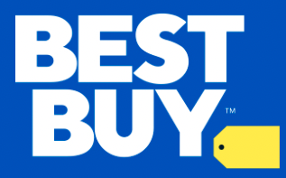

Christian Diaz - HTML Resume
 Contact Me
My Hobbies
Contact Me
My Hobbies
Education:
Computer Science BA
- Florida International University
Entrepreneurship - Minor
- Florida International University
Employment
Software Engineer
- Amazon Web Services (AWS)
- August 2022 - September 2023
- Had technical ownership of designs and services, and influenced good coding practices among peers.
Responsibilities will included designing, coding, reviewing, testing, fixing, researching, deploying and maintaining services and code in Amazon cloud production environments.
- As a software engineer, I took ownership of solution design, turn it into code and delivered it on schedule, using appropriate technologies and current software engineering best practices.
- Collaborated with my team and across different teams to take responsibility for improvements and building of new tooling, features, services and applications.
- At Amazon I had the responsibility of building, maintaining and running the software my team owned, including the dependencies of their team’s software, hardware platform, operating system and build.
- I was also be part of an on-call rotation within their team and, in the event of problems, are able to troubleshoot, research the root cause and thoroughly resolve defects.
Smart-Home / Networking Specialist

- Best-Buy
- September 2017 - October 2021
- Specialized in WI-FI, Networking, and Smart Home products in a thriving fast-paced, team oriented environment.
- Served as brand ambassador by bringing my passion for customer service and technology.
- Provided world-class customer experience.
- Applied the appropriate knowledge and expertice through onging learning and self-development by utilizing tools to stay ontop of new technologies.
- Maintained a positive, empathetic, and professional attitude towards customers at all times.
Projects
AI-Driven Discord Bot
- Completion Date: Nov, 2020
- Developed a web-scraping AI-bot that would notify user's whenever a PS5 or Xbox Series X was available from several online retailers.
- Used agile programming methods to accomplish project in the Python programming language.
- Familarized myself with the software development cycle and several software processing models.
- Learned about web-scraping and got familar with parsing HTML and XML online documents.
API Music Website
- Completion Date: April, 2021
- Created WorldWideMusic, a music web app that utilized the Musixmatch API to generate song lyrics and request currently trending music charts from around the world.
- Designed the website using key human computer interaction principles in the Python programming language.
- Got familiar with several Python programming packages like: NumPy & Pandas.
- Learned how to properly use API's and understand API documentation.
Smart Solar Panel Application (UI)
- Completion Date: August, 2021
- Designed a user interface for a solar panel mobile application. Designed the UI for a made up smart home solar panel.
- Use cases in design included; Turning on room lights via the solar panel app, heating up a pool, and controlling temperature inside the home.
- Developed a process for discovering user needs and designed solutions to meet them.
- Considered usability and accessibility of product throughout the entirety of development.
- Familarized myself with UI/UX tools; Balsamiq and Figma.
Amazon (AWS) Projects
- New Region Build Automation
- Bucketless Key
- Redirect Customer Traffic (Blob-Assmbler)
Strengths
- Reliable & Consistent
- Oral & Written Communication
- Commited to Lifelong Learning
- Team Building
- Ownership